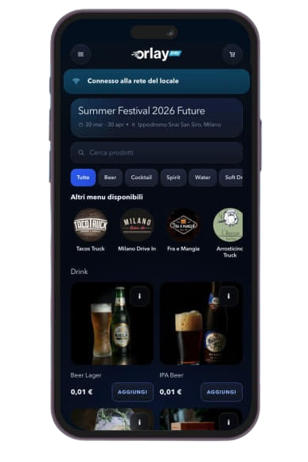
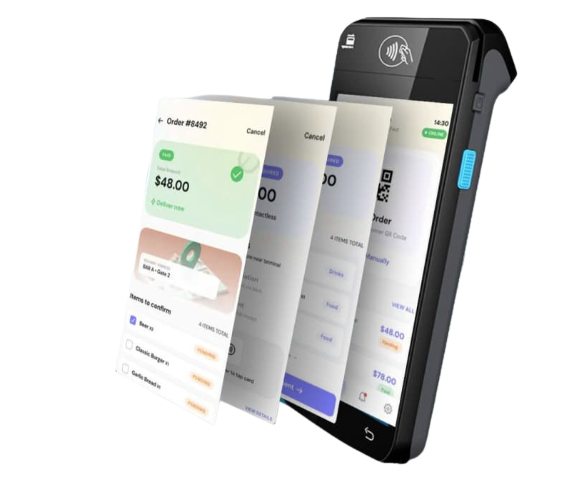

Per festival, stadi, arene e venue ad alta affluenza
Mantieni le vendite attive nei picchi di code, pagamenti e ritiri.
Orlay Pay collega una web app QR per il pubblico, uno schermo di servizio per lo staff e una control room per l’organizzatore. Il pubblico ordina e paga dallo smartphone o completa al bar, lo staff serve più velocemente e il tuo team vede in tempo reale domanda, ricavi e pressione sui ritiri per zona.
Nessun download app
Pagamento online o al bar
Ritiro per zona
Dashboard ricavi live
Creato per i picchi evento
Dashboard live di esempio
Web app QR · nessun download
Summer Festival 2026
Evento in corso
Controllo zone e ritiriVista operativa
Palco
Food Court
VIP
Hospitality
Merch
Ritiro B
Ordine #1842 pronto in 6 min
QR 58K2
Cos’è Orlay Pay?
Una piattaforma per le vendite durante gli eventi.
Orlay Pay non è solo uno strumento di pagamento. È un livello operativo per food and beverage, hospitality, aree VIP, merchandising e punti di ritiro dedicati durante gli eventi live.
Configura il flusso evento
Imposta menu, prezzi, zone di ritiro, punti servizio, flussi pubblico, codici QR e pagamenti prima dell’apertura.
Controlla la domanda in tempo reale
Permetti al pubblico di ordinare dal telefono, allo staff di servire ordini strutturati e monitora la pressione live per area.
Migliora l’evento successivo
Capisci cosa ha venduto, dove si sono create le code, quali zone hanno reso meno e cosa cambiare la prossima volta.
Prontezza della piattaforma
Progettata per la vera pressione delle operazioni live.
Orlay Pay supporta gli aspetti pratici che contano per gli organizzatori: flussi di ticketing, ordini food and beverage, connettività instabile, fallback di pagamento e fiscalizzazione.
Flusso integrato con il ticketing
Collega accesso del pubblico, momenti di ingresso QR e flussi segmentati con ordini, ritiri e aree servizio.
Operazioni pronte anche offline
Mantieni i flussi staff utilizzabili anche con connessione instabile, poi sincronizza le attività quando la rete torna affidabile.
Supporto avanzato alla fiscalizzazione
Prepara dati di vendita, ricevute e report operativi per i requisiti fiscali delle vendite strutturate negli eventi.
Pagamenti con fallback
Usa il pagamento online quando è adatto e mantieni il paga al bar quando venue, pubblico o connessione richiedono flessibilità.
Come funziona in 4 passaggi
Scansiona, ordina, paga online o al bar, poi ritira.
Il flusso è semplice per il pubblico, strutturato per lo staff e misurabile per gli organizzatori. Non serve scaricare un’app.
Scansiona QR
Il pubblico apre la web app da un QR in venue, tavolo, posto, zona o schermo.
Ordina
Vede menu, prezzi e disponibilità corretti per la propria area.
Paga online o al bar
Il pubblico paga online o mantiene l’ordine pronto da completare al banco.
Ritiro
Codice ritiro, zona, tempi e indicazioni restano visibili sul telefono.
Il problema
La domanda di picco è dove i ricavi spariscono.
Quando il pubblico deve scegliere, pagare, aspettare e chiedere dove ritirare, la coda diventa una perdita di vendite.
Le vendite si perdono prima del checkout
Le persone lasciano la fila, comprano meno o rimandano l’acquisto quando l’attesa sembra incerta.
Lo staff smette di servire e inizia a risolvere problemi
Gli operatori perdono tempo a ricostruire ordini, controllare pagamenti e spiegare le istruzioni di ritiro.
I manager vedono il problema troppo tardi
Ricavi, code, stato dei ritiri e performance delle zone sono spesso divisi tra strumenti diversi.
L’evento successivo parte da ipotesi
Senza dati chiari, staffing, prezzi e layout vengono decisi sulla percezione invece che su evidenze.
Il flusso connesso
Un solo flusso connesso: ordina, paga, servi, controlla.
Orlay Pay mantiene collegati percorso del pubblico, flusso staff e control room organizzatore nei momenti che contano di più.
Il pubblico ordina più velocemente
Scansiona un QR, vede il menu corretto, ordina dal telefono e riceve istruzioni di ritiro chiare.
Lo staff serve più velocemente
Ogni ordine arriva strutturato, con articoli, stato pagamento, codice ritiro e prossima azione già visibili.
Gli organizzatori agiscono in tempo reale
Vedono ricavi live, ordini in attesa, pressione sui ritiri e zone critiche prima che la congestione diventi vendita persa.
Ogni evento migliora quello successivo
Usa i dati post-evento per ottimizzare prezzi, staffing, layout e offerta.
Controllo organizzatore
Controlla l’evento mentre i ricavi sono ancora in gioco.
Monitora ricavi, ordini, pressione sui ritiri, punti servizio e aree critiche da una sola vista operativa live.
Quando una zona si sovraccarica, il tuo team può aprire un’altra corsia ritiro, spostare staff, reindirizzare ospiti, mettere in pausa articoli non disponibili o promuovere un punto servizio più veloce prima che la coda diventi perdita di ricavi.
Domanda negli ultimi 90 minutiDashboard live di esempio
Fan app
Il telefono diventa il punto vendita più veloce dell’evento.
Il pubblico apre Orlay Pay da un codice QR, senza scaricare app. Vede il menu dell’evento, ordina dal posto, paga online o completa al bar e riceve istruzioni di ritiro chiare.
Paga online o al bar senza perdere l’ordine
Ordine92%
Pagamento84%
Ritiro76%
Fan journeyOrdina dal posto

Menu live
Disponibilità aggiornata per area, pubblico o punto servizio.
Checkout rapido
Pagamento dal telefono senza seconda coda al banco.
Pickup guidato
Punto e tempo stimato sempre chiari sul telefono.
Pre-orderPronto da servire
Next actionConferma ritiro

App POS staff
Più velocità al banco, meno improvvisazione sul campo.
Ogni ordine arriva sul dispositivo staff con articoli, quantità, stato pagamento, codice ritiro e prossima azione già chiari.
Il pre-ordine arriva già strutturato
Nessuna interpretazione manuale, screenshot o nota scritta a mano.
Totale, stato e prossima azione sono subito visibili
Lo staff vede subito se l’ordine è pagato online, in sospeso, fallito o pronto per il ritiro.
Incasso e consegna rientrano nello stesso processo
Consegna tramite codice, conferma il passaggio e mantiene aggiornata la coda ritiro.
Meno errori, meno training, più fluidità nei picchi
Il flusso è pensato per onboarding rapido e finestre di servizio ad alta pressione.
Mappa evento
Arena Live · zone servizio ad alta densità
Zoom 100%
PALCO
Food Court route active
Area VIP route active
Hospitality route active
Merch route active
Pickup route active
Food Court
Area VIP
Bar
Hospitality
Merch
Pickup
Route active
Percorsi, mappe e aree
Usa zone e punti ritiro per ridurre la pressione della folla.
Configura aree servizio, gruppi ritiro, percorsi dedicati e menu per pubblico specifico, così ogni persona sa dove andare e cosa fare.
Alert operativo di esempio
Il Food Court supera la soglia di ritiro.
Apri la corsia Pickup e sposta due persone dello staff prima della prossima pausa.
Food court
Instrada gli ordini al punto ritiro corretto e rileva le aree sovraccariche prima che le code crescano.
Bar e punti servizio
Bilancia la domanda tra più banchi e apri corsie rapide quando serve.
VIP e hospitality
Crea menu, punti ritiro e percorsi dedicati per ospiti premium.
Merchandising
Gestisci finestre d’acquisto brevi e intense senza mescolare code merch con traffico food and beverage.
Contesti ideali
Creato per eventi dove le finestre di picco decidono i ricavi.
Orlay Pay è ideale quando migliaia di ospiti, più punti servizio e finestre d’acquisto brevi creano pressione su vendite, staff e ritiri.
Festival e concerti
Pause brevi, folla densa e alta domanda food and beverage.
Stadi e arene
Più bar, food court e zone posti con picchi sincronizzati.
Aree hospitality e VIP
Menu dedicati, flussi premium e punti ritiro separati.
Stand merchandising
Finestre di acquisto ad alta intensità prima, durante e dopo lo show.
Eventi corporate e privati
Pubblico controllato, accessi segmentati ed esperienze servizio su misura.
Non ogni venue ha bisogno di Orlay Pay. È pensato per eventi in cui code, punti servizio e domanda di picco influenzano direttamente i ricavi.
Analisi per l’evento successivo
Trasforma ogni evento in un piano migliore per il prossimo.
Dopo l’evento, Orlay Pay mostra cosa ha convertito, cosa ha rallentato e dove la domanda è stata persa, così staffing, prezzi e layout successivi si basano sui dati.
Area più veloceLounge VIP
Finestra di picco21:10
Prossima azioneStaffing
Performance aree
Quali zone hanno venduto di più, rallentato o richiesto staff extra.
Finestre di picco
Quando la domanda è salita e quali punti servizio sono diventati colli di bottiglia.
Mix prodotti
Quali prodotti food, beverage, VIP o merch hanno generato ricavi.
Pressione ritiri
Dove si sono accumulati ordini in attesa e quanto è durato il servizio.
Azioni per il prossimo evento
Raccomandazioni pratiche per staff, menu, layout ritiri e instradamento del servizio.
Setup operativo
Parti dagli asset che il tuo evento ha già.
Per preparare un evento, Orlay Pay mappa menu, punti servizio, zone ritiro, dispositivi staff, codici QR, contesto ticketing, fiscalizzazione e setup pagamenti.
Menu e prezzi
Crea menu separati per food, beverage, hospitality, VIP e merchandising.
Punti servizio
Mappa bar, banchi, corsie ritiro e flussi pubblico dedicati.
Dispositivi staff
Usa schermate ordine chiare per i team di servizio durante i picchi.
Codici QR e pagamenti
Collega accesso da browser, pagamento online e fallback paga al bar.
Contesto ticketing
Pianifica l’accesso agli ordini intorno a ingressi, tipi di pubblico, aree VIP e momenti di acquisto ad alta densità.
Regole fiscali e offline
Definisci regole per ricevute, fiscalizzazione e fallback connessione prima dell’inizio evento.
Review del flusso evento
Prenota una review del flusso evento di 30 minuti.
Mapperemo dimensione del pubblico, finestre di picco, bar, punti ritiro, aree VIP, flussi merchandising e setup pagamenti attuale, poi mostreremo come Orlay Pay funzionerebbe sul tuo evento.
- Review di pubblico e finestre di picco
- Mappatura punti servizio e zone ritiro
- Walkthrough di web app QR, flusso staff e dashboard organizzatore